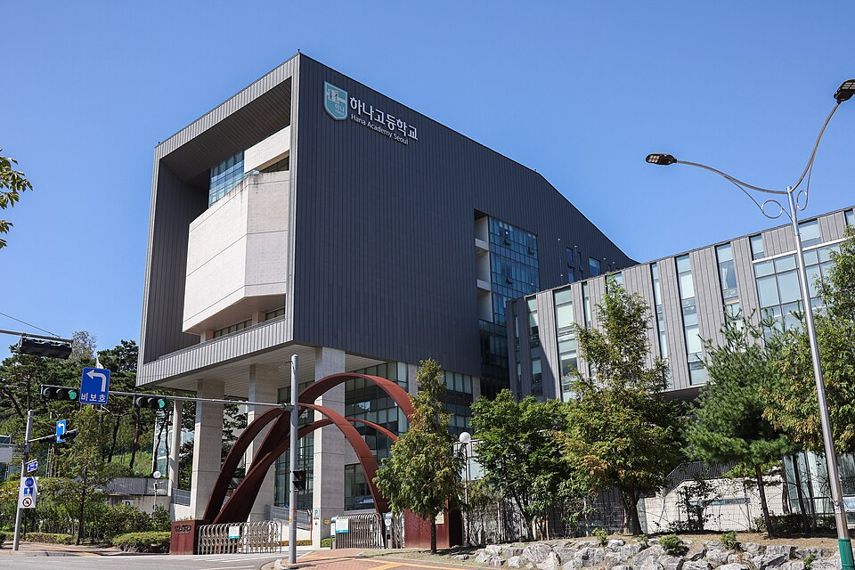

은평구는 학교가 36곳으로 서울에서도 많은 편입니다. 진관동 은평뉴타운의 하나고·진관고·진관중은 개교한 지 오래되지 않았고, 불광·역촌의 대성고·충암고·숭실중은 오래된 학교라 기출 경향이 뚜렷합니다. 학원가가 연신내에 몰려 있어서 수색·증산·진관 쪽은 집으로 오는 영어과외·수학과외를 찾는 가정이 많습니다.
오늘은 은평구에 직접 찾아가는 선생님 중 두 분을 소개합니다. 한 분은 국영수를 한 번에 관리하는 15년차, 한 분은 영어교육과를 나온 영어 선생님입니다.
은평구에서 영어과외와 수학과외를 한 분에게 맡기려 할 때 맞는 선생님입니다. 두 과목을 동시에 보면서 초·중등 국어까지 관리해서, 과목마다 선생님을 따로 구할 필요가 없습니다. 수행평가와 다른 과목 코칭도 함께합니다.
15년 경력에서 나오는 관리가 촘촘합니다. 매 수업 후 리포트를 보내고, 학생·학부모·선생님 3인 단톡방을 운영하며, 수업이 없는 날에도 학습 플랜을 챙깁니다. 차분하고 친절한 설명에 리더십이 있는 편이라, 학습 습관이 잡히지 않은 초·중등 학생에게 특히 맞습니다.
김ㅇ인 선생님 상세 프로필 →영어교육과를 전공하고 교원 자격증까지 취득한 선생님입니다. 영어만 가르치는 전문 선생님이라 초4부터 고3까지 학년별로 무엇이 필요한지 정확히 짚습니다. 호주에서 공부한 경험도 있습니다.
밝고 긍정적인 성격에 공감 능력이 높아 학생과 관계를 빠르게 만듭니다. 영어에 거부감이 생긴 학생이나 선생님과 말을 잘 안 하는 학생에게 특히 강합니다. 방문과 화상 수업 모두 가능해서, 은평구 안이면 집으로 오고 그 외 지역은 화상으로 받을 수 있습니다.
박ㅇ안 선생님 상세 프로필 →학교마다 시험 출제 경향과 수행평가 비중이 달라서, 학교별로 준비법을 따로 정리해 두었습니다.
👉 은평구 영어과외 선생님 · 은평구 수학과외 선생님 · 관리 학교 36곳 전체 보기
학년과 과목, 원하는 시간대만 알려주시면 24시간 안에 맞는 선생님을 추천해 드립니다.